Exploring Panama: Our Road Trip in April 2022

In April 2022, we embarked on an exciting road trip through Panama, starting in the vibrant capital of Panama City. We explored the historic Casco Viejo district, the iconic Panama Canal, and the modern skyline of this bustling city.
From there, we drove to the highland town of Boquete, known for its cool climate, coffee plantations, and stunning natural scenery. We hiked through lush rainforests, explored waterfalls, and enjoyed the tranquility of the surrounding mountains.
Our next destination was the tropical paradise of Bocas del Toro, where we spent a few days soaking up the sun on pristine beaches, snorkeling in crystal-clear waters, and exploring the lively atmosphere of Red Frog Beach.
We concluded our journey back in Panama City, taking in more of the city's unique blend of history, culture, and modernity. This road trip through Panama offered an incredible mix of urban exploration, natural beauty, and tropical relaxation, making it an unforgettable adventure.
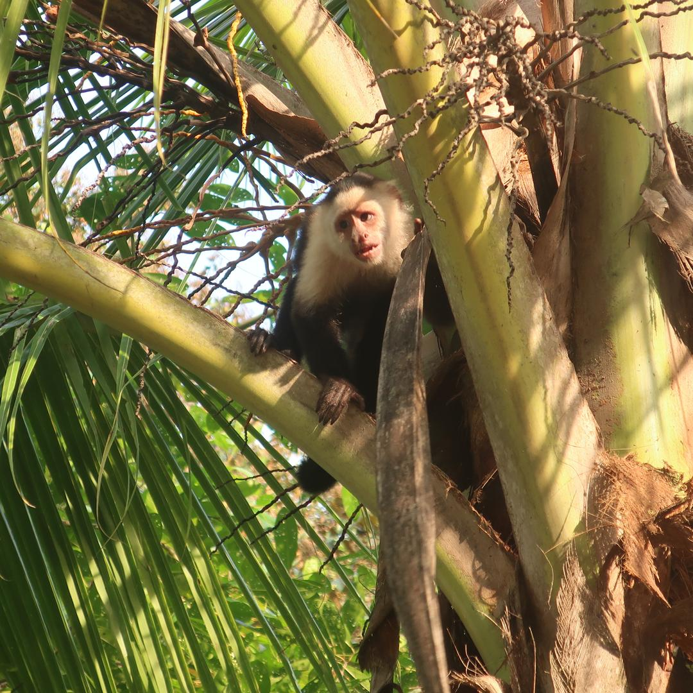
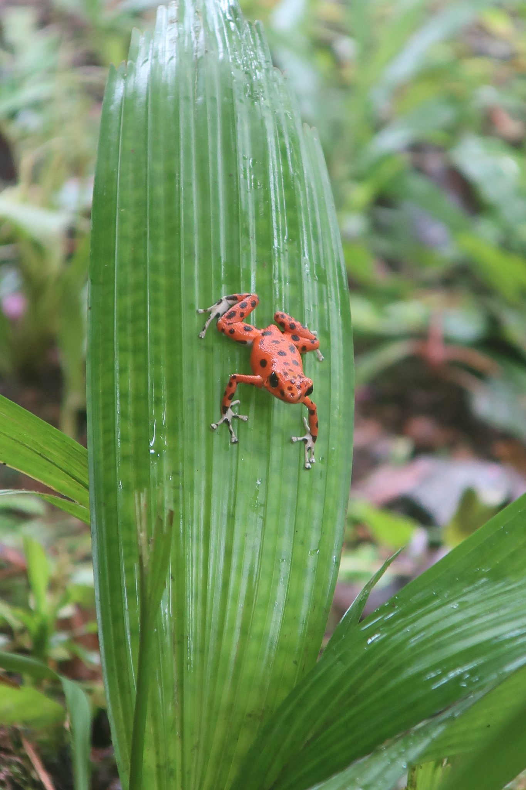
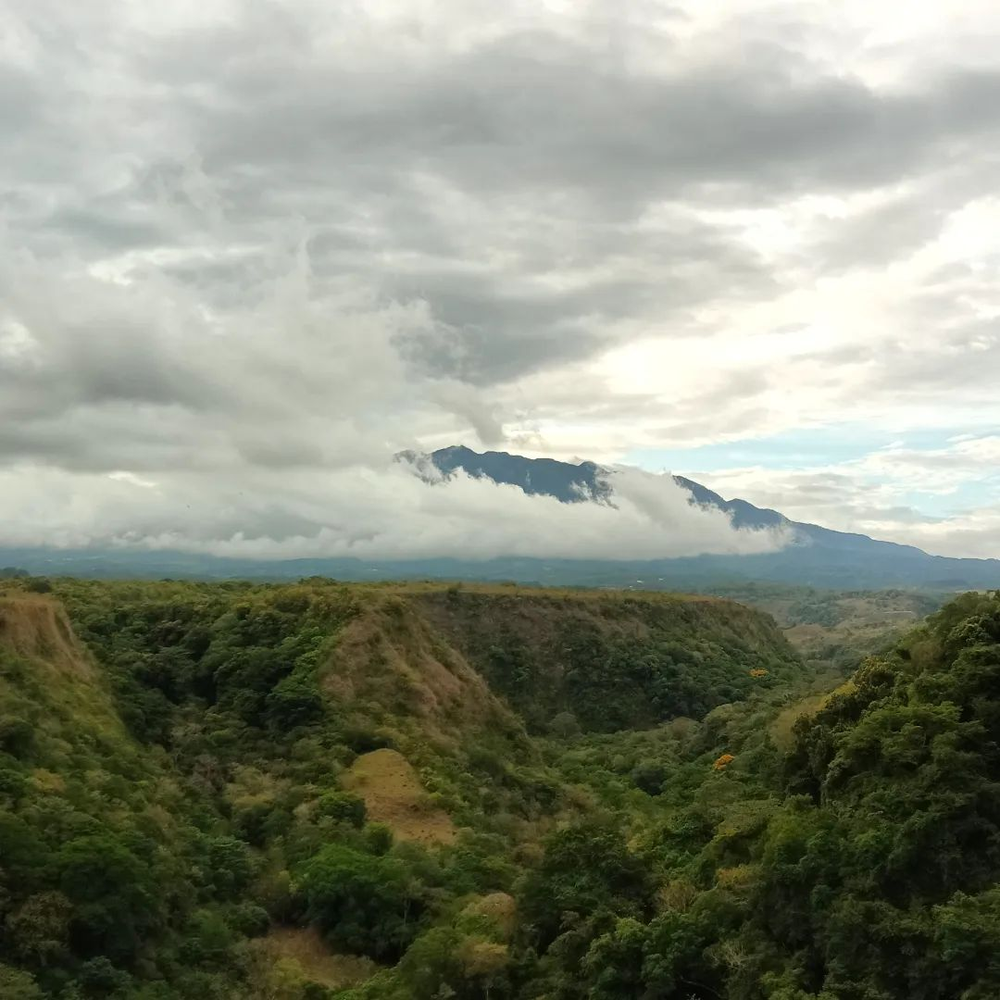
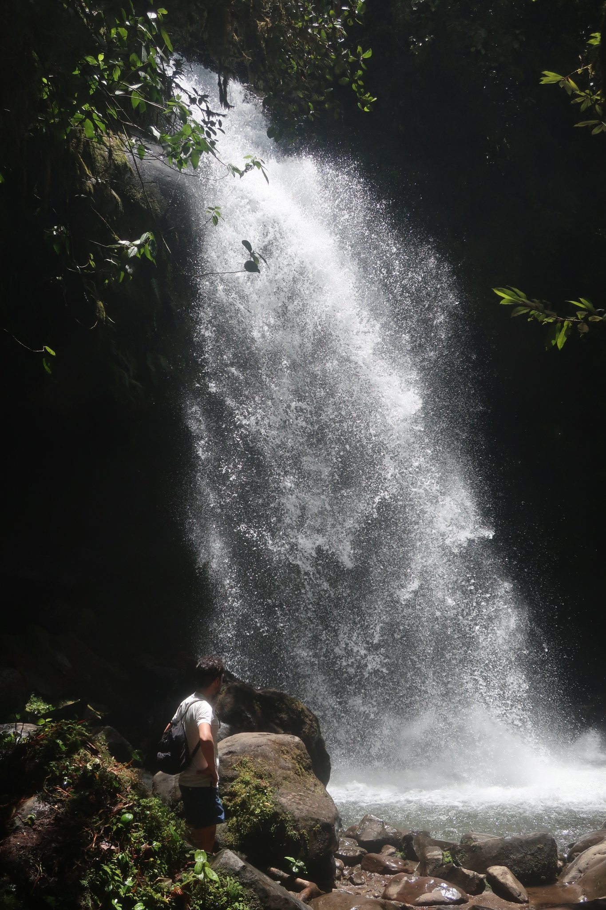
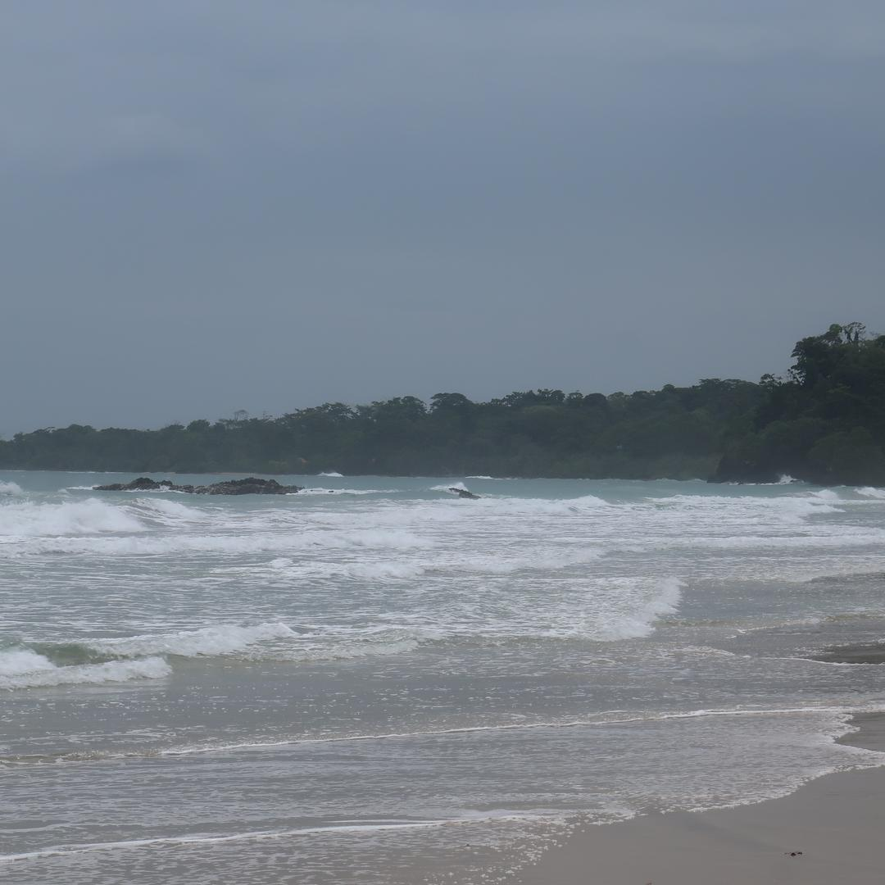
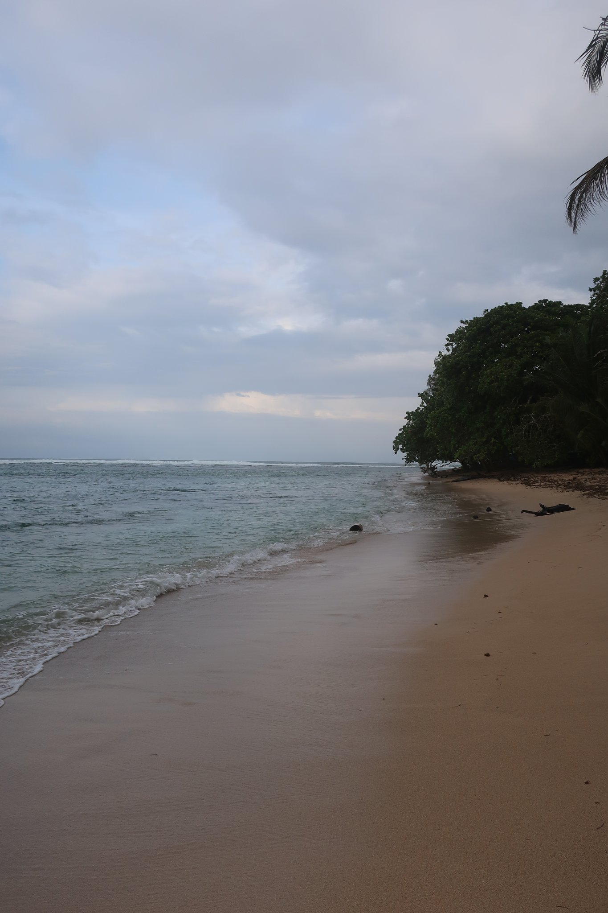
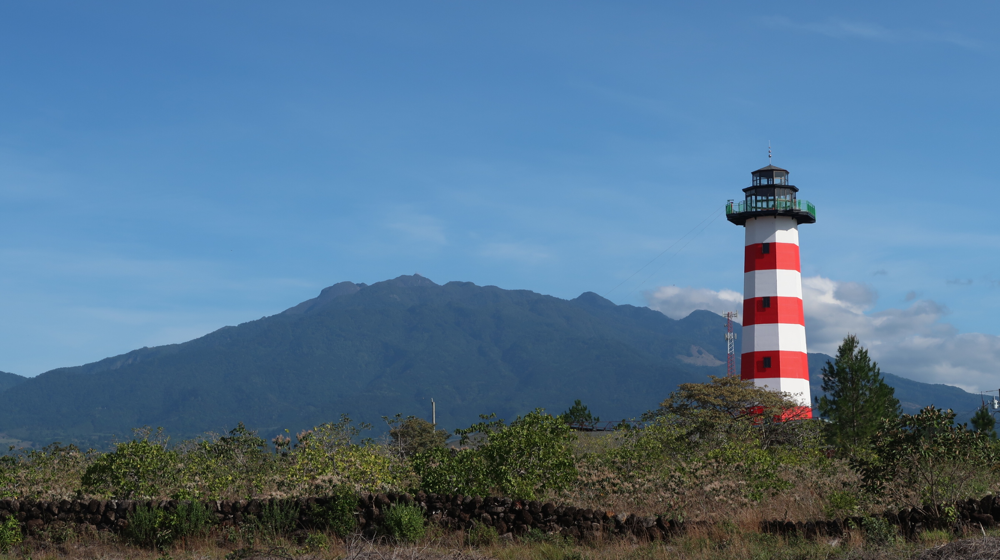
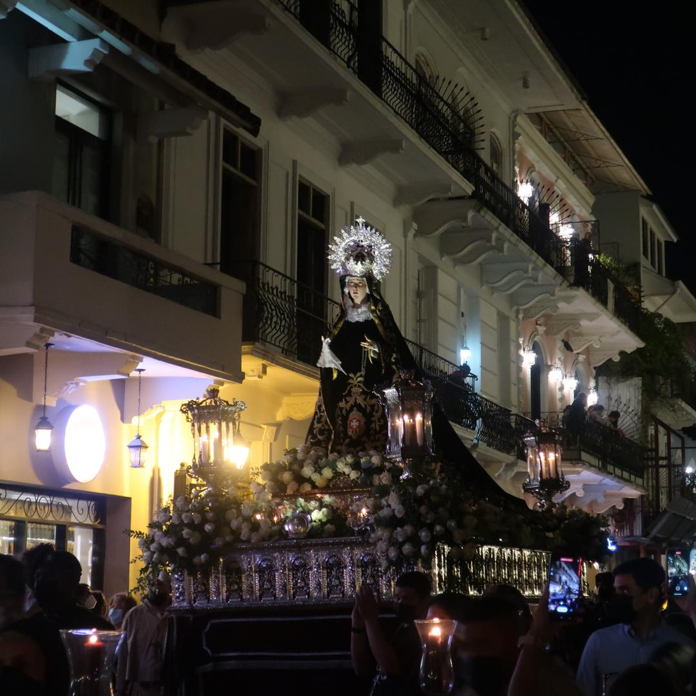
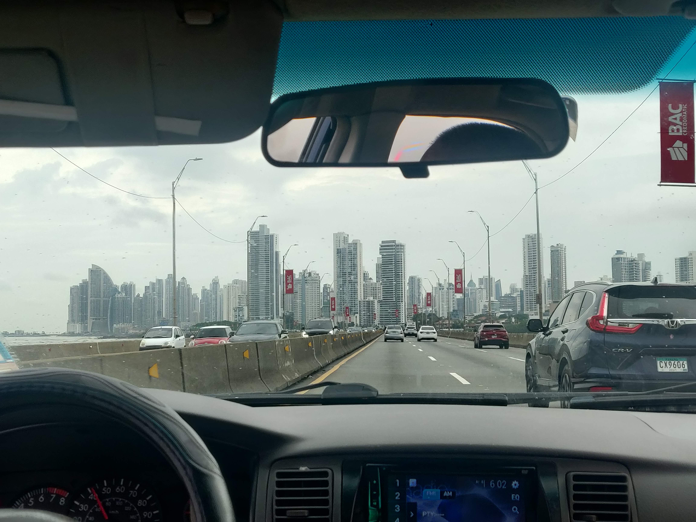
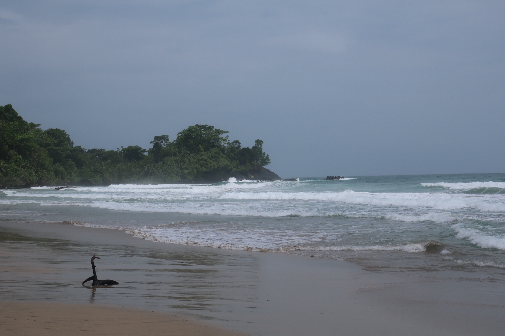
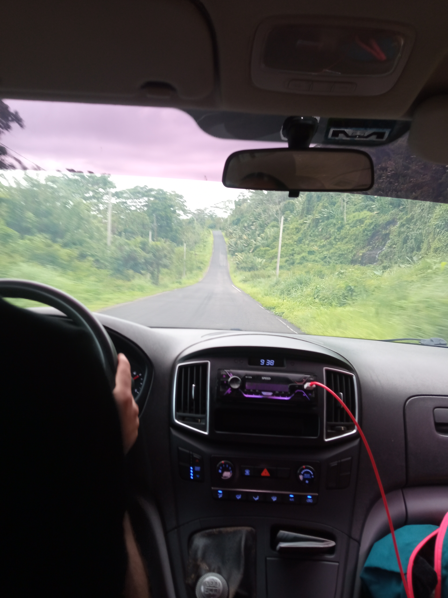
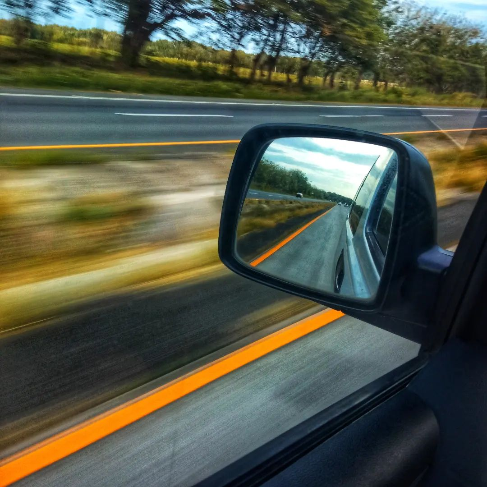
 Bordeaux
Bordeaux
 Tallin & Riga Christmas Markets
Tallin & Riga Christmas Markets
 Barcelona, Vic & Girona
Barcelona, Vic & Girona
 Skopje, North Macedonia
Skopje, North Macedonia